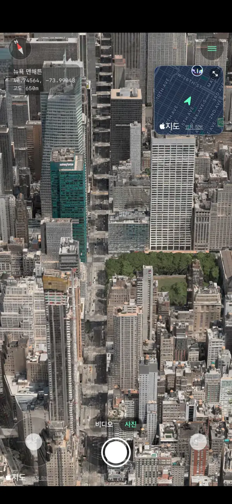
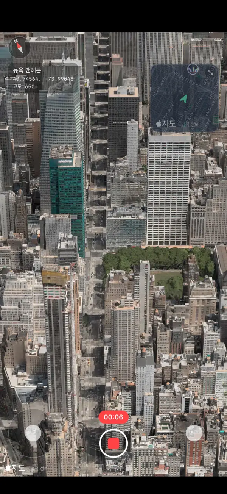
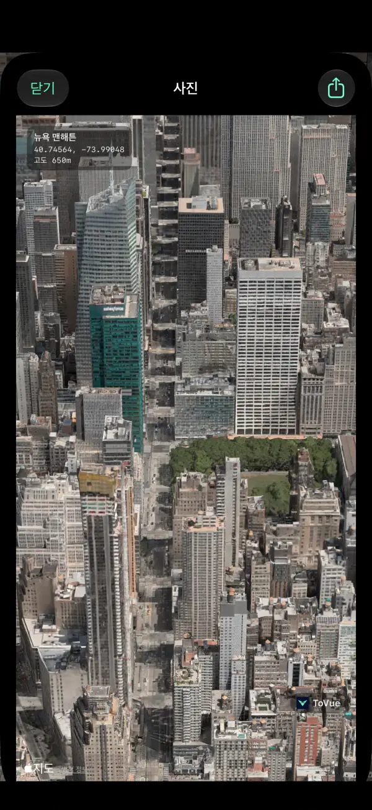
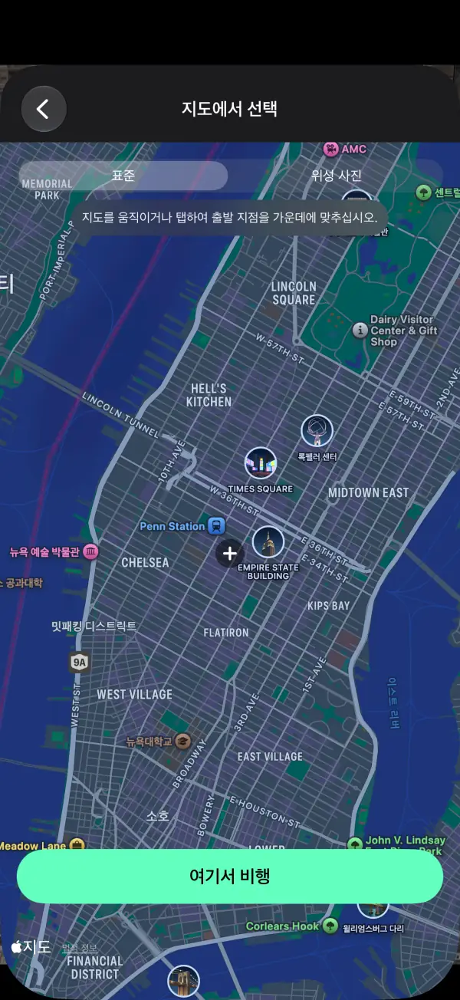
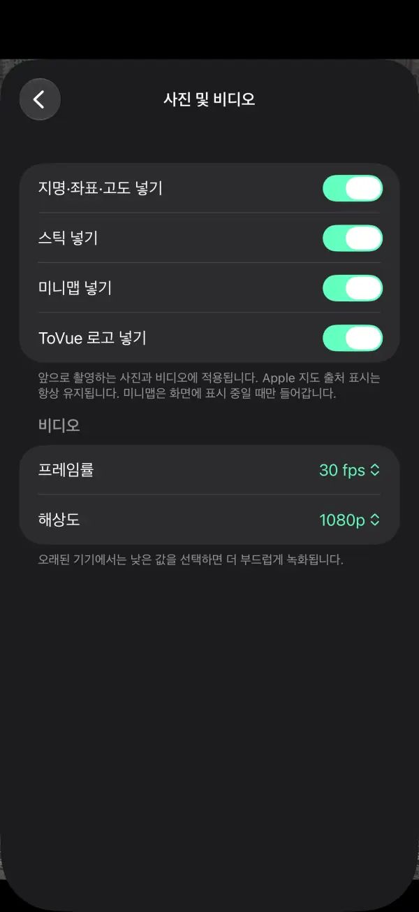

3D 지도를
드론처럼 날아보세요.
iPhone과 iPad로 세계의 도시 위를 자유롭게 비행하세요.
풍경은 사진이든 비디오든, 조작 버튼 없이 지도만 남길 수 있습니다.
 무료 · 가입 불필요 · 위치 권한 불필요
무료 · 가입 불필요 · 위치 권한 불필요주요 기능
스틱으로 날아다니며 마음에 드는 풍경을 그대로 남기세요.
자유로운 비행
화면의 두 스틱으로 상승, 회전, 전진. 한 손 모드에서는 손가락 하나로 조작할 수 있습니다.
미니맵
오른쪽 위에서 현재 위치와 진행 방향을 한눈에. 탭하면 지도에서 목적지를 고를 수 있습니다.
비디오 녹화
카메라 앱처럼 사진과 비디오를 전환해 비행 장면을 그대로 녹화하세요.
지도만 담은 사진
조작 버튼 없이 촬영하고, 장소 이름·좌표·고도를 넣을 수도 있습니다.
어디로든 이동
검색하거나 지도에서 장소를 골라 바로 그 상공에서 비행을 시작하세요.
11개 언어 지원
한국어, 영어, 일본어, 중국어 등 11개 언어. iPhone과 iPad를 지원합니다.
스크린샷





가격
모든 기능을 무료로 이용할 수 있습니다. 광고가 신경 쓰인다면 한 번만 구매하세요.
기본
무료
- 모든 비행·사진·비디오 기능
- 배너 광고와 이동 후 전면 광고
- 사진과 비디오에 ToVue 로고
광고 및 ToVue 로고 제거
1회 구매
- 한 번만 구매하며 구독이 아닙니다
- 모든 광고가 사라집니다
- 사진과 비디오의 ToVue 로고를 뺄 수 있습니다
이용 전 안내
- ToVue는 가상 지도 뷰어입니다. 실제 드론을 조종하지 않으며, 내비게이션이나 비행 계획에는 사용할 수 없습니다.
- 3D 건물과 지형은 Apple 지도 데이터를 사용하며, 지역에 따라 상세도가 다릅니다.
- 인터넷 연결이 필요합니다. ToVue는 GPS를 사용하지 않으며 위치 권한을 요청하지 않습니다.
- 사진과 비디오에는 Apple 지도 출처 표시가 항상 남습니다.
지금 하늘에서 본 풍경을 담으러 가보세요.
무료 · 가입 불필요 · 위치 권한 불필요